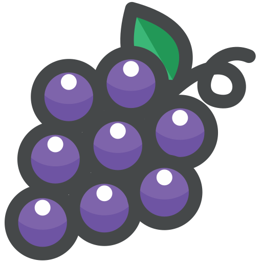

optionタグ内にimgタグを配置する
好きなフルーツを選んでください
いちご
オレンジ
 ぶどう
レモン
optgroupタグ内に
次の旅行はどこに行きますか
ソウル
K-POPとグルメの楽園
香港
ネオン輝くアジアの金融ハブ
台北
熱気あふれるグルメと文化の街
バンコク
エキゾチックな寺院巡りが楽しい
ドバイ
砂漠にそびえる近未来都市
イスタンブール
東西文化が交差する歴史の都
カイロ
ピラミッドとナイルの古都
リヤド
伝統と経済発展が共存するサウジの中心
ロンドン
歴史と最新トレンドが交差する街
パリ
芸術とカフェ文化の街
ローマ
古代遺跡が残る永遠の都
ベルリン
自由とアートが息づく都市
ニューヨーク
世界が集まる眠らない街
ロサンゼルス
エンタメとビーチの夢の都市
トロント
多文化が共存するカナダの中心地
メキシコシティ
歴史とモダンが融合する大都市
リオデジャネイロ
カーニバルとビーチの楽園
ブエノスアイレス
タンゴとヨーロッパ文化が息づく街
リマ
美食とインカの遺産が楽しめる都市
ボゴタ
アンデス山脈に抱かれたコロンビアの首都
カイロ
ピラミッドとナイルの古都
ケープタウン
テーブルマウンテンとワインの街
ナイロビ
野生動物と都市が共存するアフリカの玄関口
マラケシュ
迷路のようなスークが広がる魔法の街